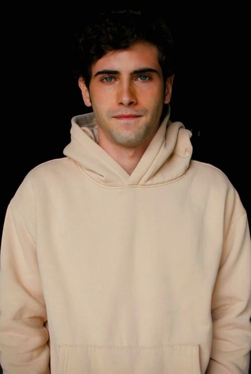

| Ator / Atriz |
Personagem |
Sobre |
|
|
Sofia Herrera |
Sofi, uma garota extremamente observadora e solitária que toma para si a missão de desmascarar
um hacker que, com acesso aos dados dos alunos, começa a chantagear os jovens colega da garota.
|
| 
|
Raúl León |
Raúl, filho de um político local que se une a Sofi e Javier na busca pelo hacker após ter seus
segredos revelados para toda a escola. |
|
|
Pablo |
Pablo, rapaz popular e namorado de Isabela. Apesar de sempre saber que a garota é trans, ele
termina com ela quando o segredo dela é revelado diante de toda a escola na tentativa de manter
sua popularidade. |
|
|
Natalia Alexander |
Natalia, uma das meninas populares do colégio. E assim como muitos a garota precisa mudar
radicalmente sua vida após o hacker divulgar para todos de onde ela consegue o dinheiro para
bancar suas roupas e acessórios de grife. |
|
|
Maria Alexander |
María, melhor amiga de Isabela que, em meio ao escândalo das revelações feitas pelo hacker,
tenta manter seu grupo de amigos unido, em vão. |
|
|
Javier |
Javier, filho de um famoso ex-jogador de futebol que chega misteriosamente durante o ano letivo.
Reservado, o garoto se atrai imediatamente a Sofi, com quem começa a buscar pela identidade do
hacker. |
|
|
Isabela de la Fuente |
Isabela, garota mais popular do colégio, mas tudo isso muda quando o hacker revela que ela, é
transgênero. Por causa disso, Isabela se torna alvo de transfobia das pessoas que se diziam suas
amigas. |
|
|
Gerardo / Gerry |
um valentão que foca suas agressões em Luis e fica ainda mais violento quando o hacker
compartilha seus segredos para seus colegas. |